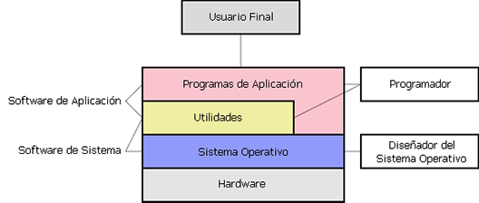

![Un programa informático es un conjunto de instrucciones que una vez ejecutadas realizarán una o varias tareas en un ordenador. Al conjunto general de programas, se le denomina software, que más genéricamente se refiere al equipamiento lógico o soporte lógico de una computadora digital. En informática, una aplicación es un tipo de programa informático diseñado como herramienta para permitir a un usuario realizar uno o diversos tipos de trabajo. Esto lo diferencia principalmente de otros tipos de programas como los sistemas operativos (que hacen funcionar al ordenador), las utilidades (que realizan tareas de mantenimiento o de uso general), y los lenguajes de programación (con el cual se crean los programas informáticos). Una aplicación es un programa informático diseñado como herramienta para permitir a un usuario realizar uno o diversos tipos de tareas. Esto lo diferencia principalmente de otros tipos de programas, como los sistemas operativos (que hacen funcionar la computadora), las utilidades (que realizan tareas de mantenimiento o de uso general), y las herramientas de desarrollo de software (para crear programas informáticos).](images/u1059-10.png)

Imagen 2. Diagrama ubicación y relación que tienen las aplicaciones frente al usuario final. (6 de abril del 2017). "Wikipedia"
![Suele resultar una solución informática para la automatización de ciertas tareas complicadas, como pueden ser la contabilidad, la redacción de documentos, o la gestión de un almacén. Algunos ejemplos de programas de aplicación son los procesadores de textos, hojas de cálculo, y base de datos. Ciertas aplicaciones desarrolladas a medida suelen ofrecer una gran potencia ya que están exclusivamente diseñadas para resolver un problema específico. Otros, llamados paquetes integrados de software, ofrecen menos potencia pero a cambio incluyen varias aplicaciones, como un programa procesador de textos, de hoja de cálculo y de base de datos.
Diagrama mostrando la ubicación y relación que tienen las aplicaciones frente al usuario final, y con otros programas informáticos existentes. Otros ejemplos de programas de aplicación pueden ser: programas de comunicación de datos, multimedia, presentaciones, diseño gráfico, cálculo, finanzas, correo electrónico, navegador web, compresión de archivos, presupuestos de obras, gestión de empresas, etc. Algunas compañías agrupan diversos programas de distinta naturaleza para que formen un paquete (llamados suites o paquetes ofimáticos) que sean satisfactorios para las necesidades más apremiantes del usuario. Todos y cada uno de ellos sirven para ahorrar tiempo y dinero al usuario, al permitirle hacer cosas útiles con la computadora; algunos con ciertas prestaciones, otros con un determinado diseño; unos son más amigables o fáciles de usar que otros, pero bajo el mismo principio.](images/u1060-19.png)
Referencias
Ruiz, A. (2013). Introducción al desarrollo de software. Entornos de desarrollo. Pags. 1 y 2. Recuperado de: https://goo.gl/x8zuwD
Aplicación informática. (2017, 6 de abril). Wikipedia, La enciclopedia libre.Recuperado de: https://es.wikipedia.org/w/index.php?title=Aplicaci%C3%B3n_inform%C3%A1tica&oldid=98157466.
Elaborado por:
Albaro Jose Ordoñez